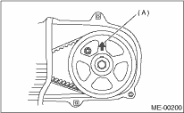
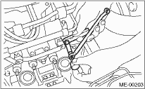

MECHANICAL(H4SO) > Valve Clearance
NOTE:
Adjustment of valve clearance should be performed while engine is cold.
1. Set #1 cylinder piston to top dead center of compression stroke by rotating the crank pulley clockwise using the socket wrench.
NOTE:
When the arrow mark (A) on cam sprocket (LH) comes exactly to the top, #1 cylinder piston is brought to the top dead center of compression stroke.

2. Adjust the #1 cylinder valve clearance.
(1) Loosen the valve rocker nut and screw.
(2) Set a suitable thickness gauge.
(3) While noting the valve clearance, tighten the valve rocker adjusting screw.
(4) When the specified valve clearance is obtained, tighten the valve rocker nut.
Tightening torque:
9.75 N·m (1.0 kgf-m, 7.2 ft-lb)
NOTE:
• Insert the thickness gauge (A) in as horizontally as possible with respect to the valve stem end face.
• Lift up the vehicle, and then measure the exhaust valve clearances.
Valve clearance:
Intake
0.20±0.04 mm (0.0079±0.0016 in)
Exhaust
0.25±0.04 mm (0.0098±0.0016 in)

3. Adjust the valve clearance in #3, #2 and #4 cylinder in the same adjustment procedure as #1 cylinder.
NOTE:
• Be sure to set the cylinder pistons to their respective top dead centers on compression stroke before adjusting valve clearances.
• By rotating the crank pulley clockwise every 180° from the state that #1 cylinder piston is on the top dead center of compression stroke, #3, #2 and #4 cylinder pistons come to the top dead center of compression stroke in this order.
4. Ensure the valve clearances of each cylinder are within specifications. If necessary, readjust the valve clearances.